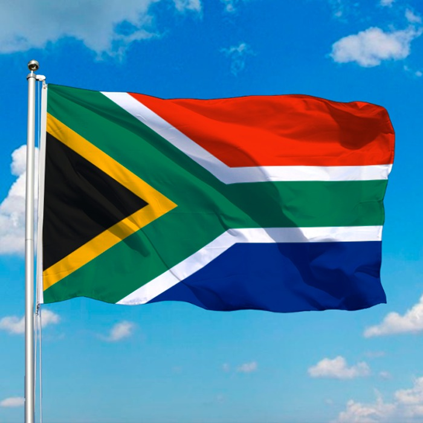

Lebogang Masenya
About Me

My name is Lebogang Masenya. I am from South Africa in Pretoria. I am currently studying a degree in Software Development. My interests are listening to music, spending time with my family, traveling on vacations. I love nature.
South Africa
South Africa is a country on the southernmost tip of the African continent, marked by several distinct ecosystems. Inland safari destination Kruger National Park is populated by big game. The Western Cape offers beaches, lush winelands around Stellenbosch and Paarl, craggy cliffs at the Cape of Good Hope, forest and lagoons along the Garden Route, and the city of Cape Town, beneath flat-topped Table Mountain.